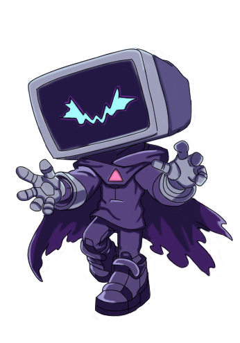
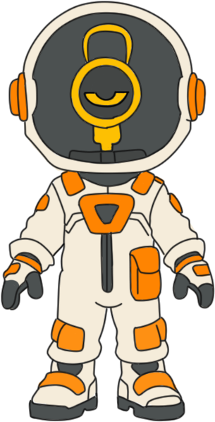
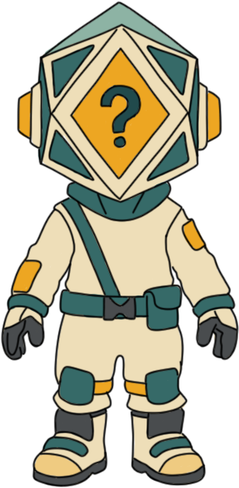
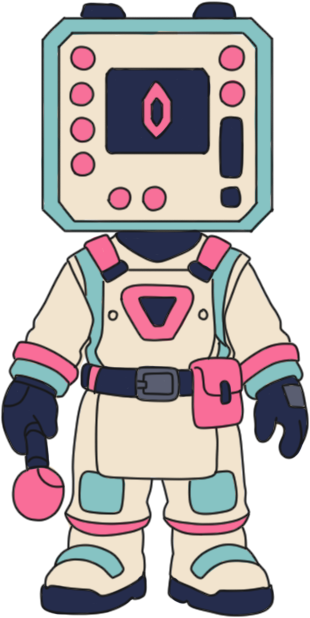

Reemplaza este texto por el código <iframe>
El Sistema está Roto
Un glitch se adentra en un videojuego olvidado que continúa funcionando sin jugadores. Su objetivo es romper sus ciclos y desestabilizar el sistema desde adentro.
A medida que avanza por distintos niveles, el jugador deberá intervenir en su lógica y enfrentar a las entidades del sistema que intentan, desesperadamente, mantener el orden establecido.
¿Serás capaz de liberar al mundo de su repetición constante o provocarás su colapso definitivo?
NUESTRO SELLO ÚNICO
El sistema actúa como un oponente dinámico. No es un entorno pasivo: modifica en tiempo real la visibilidad, los caminos y las condiciones del nivel para impedir tu avance.
Mecánicas de Juego
La supervivencia depende de tu capacidad analítica y tus reflejos. Sumérgete en un gameplay que desafía la lógica:
Entidades del Sistema
Conoce a los elementos corruptos y a los agentes de seguridad que habitan dentro de este entorno olvidado.

Glitch

Lux

Log

Patch
Inspiraciones y Evolución
| Juego de Ref. | Nuestra Similitud | La Diferencia OUT OF THE BOUNDS |
|---|---|---|
| Portal | Uso de una mecánica central para resolver situaciones. | El jugador no mantiene una sola lógica: debe cambiar constantemente entre esquivar, activar y atravesar. |
| Inside | Uso del entorno y la atmósfera para generar tensión. | Nuestro personaje, LUX, puede cambiar la visibilidad en tiempo real, afectando directamente el gameplay. |
| Superliminal | Interacción con reglas del entorno para avanzar. | No se altera la perspectiva visual, sino que se alteran los estados internos del sistema (activar, desactivar, atravesar código). |